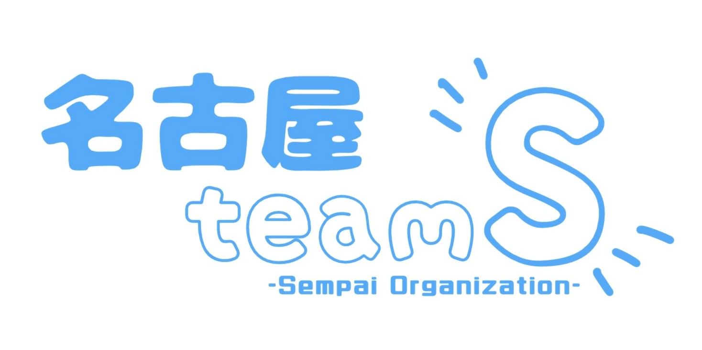

名古屋team Sは防災イベントへの出展、学校での授業や講演、交流事業などを通して名古屋市と陸前高田市の絆を深める活動を行っています。
名古屋team Sは防災イベントへの出展、学校での授業や講演、交流事業などを通して名古屋市と陸前高田市の絆を深める活動を行っています。
絆交流は、名古屋市と陸前高田市の中学２年生がお互いの市を訪問しあう交流事業です。
東日本大震災発生後、名古屋市は陸前高田市に対して行政全般にわたる支援として「行政丸ごと支援」を行いました。
また、修学旅行に行けなかった陸前高田市の中学生を名古屋市に招待するプロジェクトも実施され、名古屋市と陸前高田市の絆が育まれていきました。
子どもたちの交流を末長く続けるため2012年（平成24年）から「絆交流」がスタートし、現在に至るまで交流が続いています。
名古屋team Sは絆交流の経験者のみで構成されています。
絆交流に参加した中学生の「センパイ」チームということで「team S」と名付けられました。
交流は10年以上続いているため、名古屋team Sには高校生から社会人まで、幅広い世代のメンバーが参加しています。
陸前高田市で学んだことを多くの人に伝えるため、活動を行っています。
イベント出展・講演・おがくず製品販売情報などは名古屋team Sの公式Instagramで随時発信していますので、ぜひアカウントのフォローをお願いいたします！
防災・減災に関するイベントなどに出展し、陸前高田市・東日本大震災・備えの重要性などについて伝える活動を行っています。
学校で防災・減災に関する授業や講演などを行うことにより、東日本大震災を知らない世代に震災について伝える活動を行っています。
「奇跡の一本松」のおがくずを使用した製品の企画・販売を行うことで、震災の記憶を形にする活動を行っています。
名古屋市と連携し、今でも続く中学生交流の支援を行っています。また、防災学習も行い、還元活動につなげています。
イベントや学校での、防災/減災に関する講演・出展・企画のご依頼をお待ちしております。ご希望の方は、下記mailまでお気軽にご連絡いただけますと幸いです。
全体mail
nagoyateamsince20241215@gmail.com